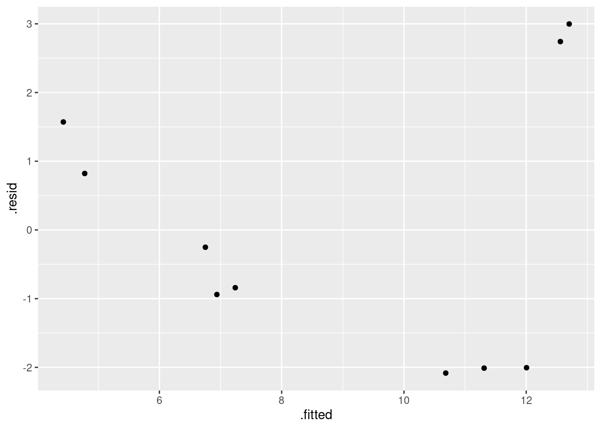

Endogenous nitrogen excretion in carp
Ken Butler
July 1, 2017
Introduction
A paper in Fisheries Science reported on variables that affect “endogenous nitrogen excretion” or ENE in carp raised in Japan. A number of carp were divided into groups based on body weight, and each group was placed in a different tank. The mean body weight of the carp placed in each tank was recorded. The carp were then fed a protein-free diet three times daily for a period of 20 days. At the end of the experiment, the amount of ENE in each tank was measured, in milligrams of total fish body weight per day. Ten tanks were used.
The aim in this report is to find a satisfactory model that predicts ENE from body weight.
Exploratory analysis
We begin by reading in the data:
library(tidyverse)
my_url="http://www.utsc.utoronto.ca/~butler/c32/carp.txt"
carp=read_delim(my_url," ") ## Rows: 10 Columns: 3## ── Column specification ────────────────────────────────────────────────────────
## Delimiter: " "
## dbl (3): tank, bodyweight, ENE##
## ℹ Use `spec()` to retrieve the full column specification for this data.
## ℹ Specify the column types or set `show_col_types = FALSE` to quiet this message.carp## # A tibble: 10 × 3
## tank bodyweight ENE
## <dbl> <dbl> <dbl>
## 1 1 11.7 15.3
## 2 2 25.3 9.3
## 3 3 90.2 6.5
## 4 4 213 6
## 5 5 10.2 15.7
## 6 6 17.6 10
## 7 7 32.6 8.6
## 8 8 81.3 6.4
## 9 9 142. 5.6
## 10 10 286. 6There are indeed ten tanks.
With two quantitative variables, a suitable graph is a scatterplot. We are taking ENE as the response, so:
ggplot(carp,aes(x=bodyweight,y=ENE))+geom_point()+
geom_smooth()## `geom_smooth()` using method = 'loess' and formula 'y ~ x'The trend is downward: as bodyweight increases, ENE decreases. However, the decrease is rapid at first and then levels off, so the relationship is nonlinear.
Model 1: a line
Given our observations above, a straight line should be a poor description of the relationship, but we begin by exploring this:
carp.1=lm(ENE~bodyweight,data=carp)
summary(carp.1)##
## Call:
## lm(formula = ENE ~ bodyweight, data = carp)
##
## Residuals:
## Min 1Q Median 3Q Max
## -2.800 -1.957 -1.173 1.847 4.572
##
## Coefficients:
## Estimate Std. Error t value Pr(>|t|)
## (Intercept) 11.40393 1.31464 8.675 2.43e-05 ***
## bodyweight -0.02710 0.01027 -2.640 0.0297 *
## ---
## Signif. codes: 0 '***' 0.001 '**' 0.01 '*' 0.05 '.' 0.1 ' ' 1
##
## Residual standard error: 2.928 on 8 degrees of freedom
## Multiple R-squared: 0.4656, Adjusted R-squared: 0.3988
## F-statistic: 6.971 on 1 and 8 DF, p-value: 0.0297R-squared is 47%, which is not that good.
We check the residuals for this model by plotting them against the fitted values:
ggplot(carp.1,aes(x=.fitted,y=.resid))+geom_point()This is a clear curve, which means the original relationship must have been a curve. So let’s try a second model, a parabola, by adding bodyweight-squared.
Model 2: a parabola
carp.2=lm(ENE~bodyweight+I(bodyweight^2),data=carp)
summary(carp.2)##
## Call:
## lm(formula = ENE ~ bodyweight + I(bodyweight^2), data = carp)
##
## Residuals:
## Min 1Q Median 3Q Max
## -2.0834 -1.7388 -0.5464 1.3841 2.9976
##
## Coefficients:
## Estimate Std. Error t value Pr(>|t|)
## (Intercept) 13.7127373 1.3062494 10.498 1.55e-05 ***
## bodyweight -0.1018390 0.0288109 -3.535 0.00954 **
## I(bodyweight^2) 0.0002735 0.0001016 2.692 0.03101 *
## ---
## Signif. codes: 0 '***' 0.001 '**' 0.01 '*' 0.05 '.' 0.1 ' ' 1
##
## Residual standard error: 2.194 on 7 degrees of freedom
## Multiple R-squared: 0.7374, Adjusted R-squared: 0.6624
## F-statistic: 9.829 on 2 and 7 DF, p-value: 0.009277R-squared has gone up from 47% to 74%, a substantial improvement. This suggests to me that the parabola model is a substantial improvement. This is confirmed by the coefficient for the squared term being significantly nonzero: the parabola is definitely better than the straight line.
Let’s make a plot with the data and fitted curve on it. This is most easily done by “fortify”-ing the regression object. What that means, in the context of ggplot, is to add the original data back onto the regression object, so that we can plot any combination of original data and values derived from the regression. That goes like this:
carp.2.fort=fortify(carp.2)
carp.2.fort## ENE bodyweight I(bodyweight^2) .hat .sigma .cooksd .fitted
## 1 15.3 11.7 136.89 0.2392022 1.992810 0.21499558 12.558657
## 2 9.3 25.3 640.09 0.1629840 2.193651 0.06514640 11.311261
## 3 6.5 90.2 8136.04 0.2396677 2.367208 0.00182089 6.751885
## 4 6.0 213.0 45369 0.3246419 2.237874 0.12169479 4.428445
## 5 15.7 10.2 104.04 0.2511559 1.902036 0.27859605 12.702432
## 6 10.0 17.6 309.76 0.1993691 2.186473 0.08656338 12.005083
## 7 8.6 32.6 1062.76 0.1425478 2.184918 0.05826041 10.683427
## 8 6.4 81.3 6609.69 0.2112076 2.338418 0.01661407 7.240829
## 9 5.6 141.5 20022.25 0.3546865 2.333053 0.03982493 4.778159
## 10 6.0 285.7 81624.49 0.8745372 2.108136 3.39715895 6.939822
## .resid .stdresid
## 1 2.7413428 1.4322784
## 2 -2.0112607 -1.0018443
## 3 -0.2518851 -0.1316435
## 4 1.5715555 0.8714880
## 5 2.9975680 1.5785999
## 6 -2.0050832 -1.0212098
## 7 -2.0834268 -1.0253497
## 8 -0.8408294 -0.4314448
## 9 0.8218410 0.4662310
## 10 -0.9398221 -1.2091687and then we make the plot thus:
ggplot(carp.2.fort,aes(x=bodyweight,y=.fitted))+
geom_line(colour="blue")+
geom_point(aes(y=ENE))
The points in the middle are above the curve, and the points at the ends are below. (That is, negative residuals at the ends, and positive ones in the middle.) Another problem is that the parabola curve fails to capture the of the relationship; for example, I see nothing much in the data suggesting that the relationship should go back up, and even given that, the fitted curve doesn’t go especially near any of the points.
Once again, we need to look at the residuals:
ggplot(carp.2,aes(x=.fitted,y=.resid))+geom_point()
I think this is a curve (or, it goes down and then sharply up at the end). Either way, there is still a pattern.
Thus, our parabola was a curve all right, but it appears not to be the right kind of curve. I think the original data looks more like a hyperbola (a curve like \(y=1/x\)) than a parabola, in that it seems to decrease fast and then gradually to a limit, and that suggests, as in the class example, that we should try an asymptote model. (This is upside down compared to the windmill one, but it’s same idea of tending to a limit.)
Model 3: an asymptote model
carp.3=lm(ENE~I(bodyweight^(-1)),data=carp)
summary(carp.3)##
## Call:
## lm(formula = ENE ~ I(bodyweight^(-1)), data = carp)
##
## Residuals:
## Min 1Q Median 3Q Max
## -1.29801 -0.12830 0.04029 0.26702 0.91707
##
## Coefficients:
## Estimate Std. Error t value Pr(>|t|)
## (Intercept) 5.1804 0.2823 18.35 8.01e-08 ***
## I(bodyweight^(-1)) 107.6690 5.8860 18.29 8.21e-08 ***
## ---
## Signif. codes: 0 '***' 0.001 '**' 0.01 '*' 0.05 '.' 0.1 ' ' 1
##
## Residual standard error: 0.6121 on 8 degrees of freedom
## Multiple R-squared: 0.9766, Adjusted R-squared: 0.9737
## F-statistic: 334.6 on 1 and 8 DF, p-value: 8.205e-08That fits extraordinarily well, with an R-squared up near 98%. The intercept is the asymptote, which suggests a (lower) limit of about 5.2 for ENE (in the limit for large bodyweight). We would have to ask the fisheries scientist whether this kind of thing is a reasonable biological mechanism. It says that a carp always has some ENE, no matter how big it gets, but a smaller carp will have a lot more.
Does the fitted value plot look reasonable now? The “fortify” thing doesn’t quite work here, since bodyweight doesn’t itself get added to the fortified data set (it is not part of the model), so it looks as if we are working with two data frames. I cheated and pulled the things I wanted out of carp without doing a data=:
ggplot(carp.3,aes(x=carp$bodyweight,y=.fitted))+
geom_line(colour="blue")+
geom_point(aes(y=carp$ENE))I’d say that does a really nice job of fitting the data. But it would be nice to have a few more tanks with large-bodyweight fish, to convince us that we have the shape of the trend right.
And, as ever, the residual plot:
ggplot(carp.3,aes(x=.fitted,y=.resid))+geom_point()
All in all, that looks pretty good (and certainly a vast improvement over the ones we got before).
Conclusions
The nonlinear nature of this relationship — a sharp drop followed by a levelling off — requires the right kind of nonlinear model, in this case an asymptote model. We found that a straight line and a parabola were not appropriate, both by looking at the residual plots and by looking at R-squared, but the asymptote model has a very high R-squared and a satisfactory residual plot. For these data, the asymptote model, fitted as our model 3, appears to be the best.